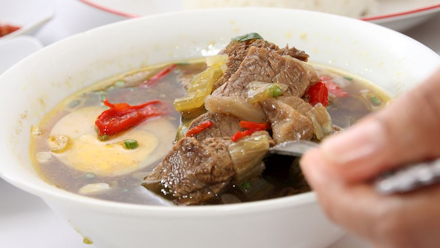
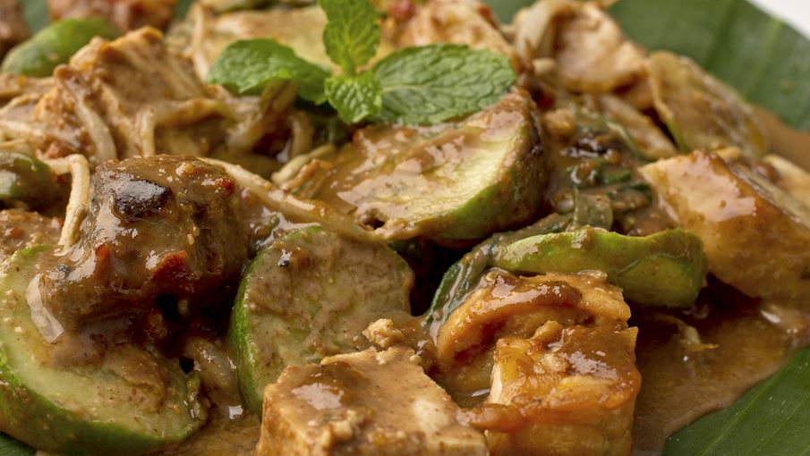
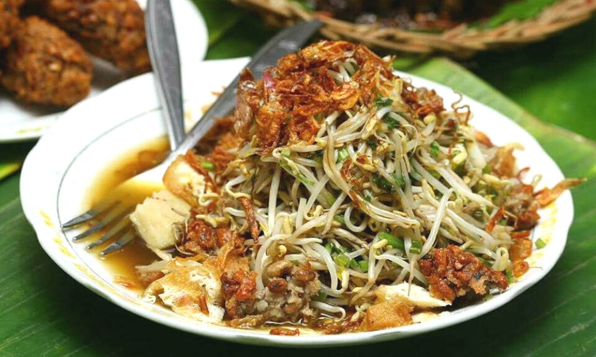

1. Rawon

Rawon is a typical Indonesian food originating from East Java. This flavorful soup is usually made with slow-boiled beef and other traditional Indonesian ingredients such as lime leaves, lemongrass, ginger, and chilies. However, the key is the kluwek fruit, Indonesia's black bean.
This typical Indonesian spice is highly toxic when raw, and always needs to be fermented before consumption. It is ground with other ingredients and spices, giving the dish a sour and earthy taste and a unique dark black color. The origin of the dish come from the city of Surabaya, the capital of East Java.
You can find Rawon at Rawon Setan, Embong Malang 78 Surabaya.
Opening Hours: 8 am to 4.30 pm. Price starts from Rp 25000.
2. Rujak Cingur

Rujak Cingur is one of the many versions of Indonesian rujak, a fruit salad consisting of different tropical fruits, usually served with a spicy and sweet sauce. Rujak cingur is a unique variety, because apart from fruit, it also contains rare vegetables and ingredients - animal muzzle.
Traditionally, beef or buffalo muzzle is used in rujak cingur, while fruit and vegetables are served boiled or raw. This dish is assembled and coated with a spicy Indonesian sauce made with shrimp paste, peanuts, sugar and chilies.
It is traditionally served on banana leaves and garnished with prawn crackers. Lontong, crackers, tahu, or tempe are usually served as side dishes. Created in East Java, and is very popular in the region's capital city, Surabaya.
You can find Rujak Cingur at Tujak Cingur Genteng, Genteng Durasim 29 Surabaya.
Opening Hours: 11 am to 5 pm. Price starts from Rp 10000.
3. Lontong Balap

Lontong Balap, originally from Surabaya, has a unique story behind its name. "Balap" literally means "racing". In the past, these food vendors carried heavy baskets competing to get customers at the Wonokromo market (pasar Wonokromo).
This dish is mainly made from lontong, bean sprouts, fried tofu, and "lentho". Served with clear broth along with fried onions, sweet soy sauce, crackers, and shell meat satay. This unusual dish can easily be found in the entire region of Surabaya.
You can find Lontong Balap at Lontong Balap Pak Gendut, Prof. Dr. Moestopo Surabaya.
Opening Hours: 9 am to 9 pm. Price starts from Rp 14000.
❮
Prev
Food
❯Next
Food